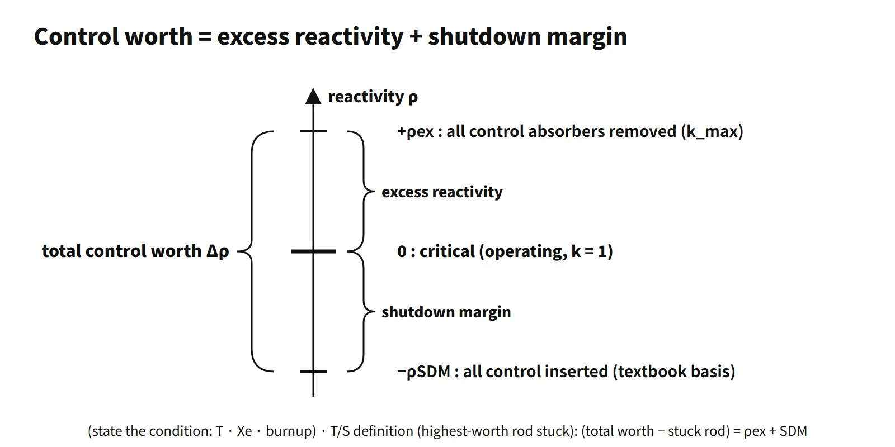

Reactor Physics & Kinetics · C-RX-011
Excess Reactivity — The Reactivity Left in the Core with All Control Absorbers Removed
The cycle reactivity budget: textbook PWR values by state, its decrease with burnup to zero at end of cycle, and total control worth = excess reactivity + shutdown margin.
Excess reactivity (ρex) is the reactivity the core would have in a stated state (temperature, xenon, burnup) if all adjustable control absorbers were assumed removed, written ρex = (kmax − 1)/kmax. It is the "cycle reactivity budget" loaded in advance to cover the reactivity that will be lost to burnup, fission products and temperature feedback.
It is also called built-in reactivity or reactivity reserve.
Principle and mechanism
Defining equation and reference state
- ρex = (kmax − 1)/kmax, where kmax = keff with the control absorbers removed
- Units: Δk/k, %Δk/k, pcm (10⁻⁵), dollars ($ = ρ/β)
- Writing kmax − 1 is wrong for large values: for kmax = 1.41, k − 1 = 0.41 but ρex = 0.291.
An operating core is critical (ρ = 0). Excess reactivity is not reactivity that actually exists; it is the value obtained by "assuming the removal" of what the control rods, boron and so on are holding down. The reference state must therefore always be stated. References also differ on whether burnable absorbers count as control elements: Duderstadt & Hamilton define it with all control elements removed, burnable absorbers included, while Lewis defines it with the "movable control poisons" removed.
Different excess reactivity for each state
The PWR first-core values (Δk/k) in Duderstadt & Hamilton Table 14-1 are:
| State | Excess reactivity | Difference |
|---|---|---|
| Cold, clean (68 °F, no Xe or Sm) | 0.293 | — |
| Operating temperature (no Xe or Sm) | 0.248 | Temperature defect 0.045 |
| Operating temperature, equilibrium Xe and Sm | 0.181 | Xe, Sm etc. 0.067 |
It is largest when cold and decreases with heat-up, power ascension and poison build-up. The control systems must be designed for the largest value (cold, clean). Lamarsh, 3rd ed., Table 7.7 gives an excess reactivity of $45 (k = 1.41) at 20 °C for a 3,000 MWt PWR, the same magnitude.
![Excess reactivity in percent delta k over k versus cycle progress: at BOC the textbook PWR first-core values are 29.3 cold clean, 24.8 at operating temperature and 18.1 with equilibrium xenon and samarium, separated by a 4.5 percent temperature defect and 6.7 percent for xenon, samarium and similar; dashed conceptual trends fall toward EOC where the third line reaches zero; a dashed line marks total control worth 32 percent (rods 7, burnable absorber 8, boron 17) with a shutdown margin of about 3 percent above the cold-clean value; a card gives the definition and the relations, beside a photo of a control rod assembly](../../assets/images/concepts/c-rx-011-excess-reactivity/fig1-excess-reactivity-cycle.webp)
How reactivity changes with burnup
The reactivity change with burnup during power operation is the sum of the following:
- U-235 depletion (−): less fissile material lowers η and f.
- Fission-product build-up (−): besides Xe and Sm, long-lived fission products keep accumulating.
- Pu-239 and Pu-241 production (+): formed by capture in U-238, partly offsetting the loss.
- Burnable absorber depletion (+): raises reactivity early in the cycle, so the boron curve stays flat or rises slightly.
- MTC becoming more negative (−): as boron falls, the MTC becomes more negative and the power defect grows.
As a result, the hot-full-power excess reactivity decreases almost linearly with burnup, and following it by boron dilution gives the boron letdown curve. When the excess reactivity at hot full power with equilibrium xenon reaches zero, full-power criticality can no longer be maintained: this is the end of cycle (EOC).
What it means in a plant
Why excess reactivity is loaded at beginning of cycle
Both first cores and reload cores are loaded so that keff > 1 (with no control absorbers).
- Burnup compensation: the reactivity to be lost over the cycle length (for example 18 months) must be loaded in advance to stay critical to the end. This is the largest share.
- Fission-product poisons: equilibrium Xe (about −2,500 to −3,000 pcm in an actual PWR) and Sm must be overcome.
- Temperature and power defect: negative feedback takes away reactivity on the way from cold to hot to full power.
- Operating margin: power control and the margin to restart past the post-shutdown xenon peak.
- Power ascension: raising power beyond criticality requires the ability to insert positive reactivity.
CANDU, with on-power refueling, keeps its excess reactivity close to zero and does not need the large beginning-of-cycle excess reactivity of a light-water reactor.
Means of holding down excess reactivity
A PWR divides the job among three means:
- Control rods: fast power control and shutdown; about 7 % in the textbook first core.
- Dissolved boron: slow changes from burnup, xenon and temperature; about 17 %.
- Burnable absorbers (Gd₂O₃, IFBA etc.): take the beginning-of-cycle share and disappear with burnup; about 8 %.
A reload core has a critical boron concentration of about 1,000–1,500 ppm at BOC hot full power (illustrative), so boron is holding roughly 10,000 pcm.
Problems if it is too large
- More poison must be loaded, worsening neutron economy.
- More reactivity can be inserted in rod ejection, rod withdrawal and boron dilution accidents.
- High boron concentration can make the moderator temperature coefficient positive.
- More control rods and banks raise the cost.
Worked example — minimum boron concentration
Given: boron reactivity ρw ≈ Σ̄aB/(Σ̄aF + Σ̄aM), Σ̄aB/Σ̄aM = 2.0C×10⁻³, f = 0.930, total excess reactivity 22 %, control rods 8 %.
- Reactivity worth per ppm = 2.0×10⁻³ × (1 − 0.930) = 1.4×10⁻⁴
- Boron share = 22 − 8 = 14 %
- C = 0.14/1.4×10⁻⁴ = 1,000 ppm
Relation to shutdown margin
The key relation fits in one line: in the same reference state, total control worth = excess reactivity + shutdown margin (Duderstadt & Hamilton Eq. 14-2). The shutdown margin in this textbook equation is based on all control elements inserted. Checking with Table 14-1: cold, clean 0.293 + 0.03 ≈ 0.32, and operating temperature with equilibrium Xe and Sm 0.181 + 0.14 ≈ 0.32, both matching the total control worth of 0.32.
- With the same control worth, larger excess reactivity means a smaller shutdown margin, so increasing the fuel loading requires increasing the control worth as well.
- The shutdown margin in the technical specifications assumes that the single control element assembly of highest worth is fully withdrawn and stuck. With that definition the relation becomes (total control worth − stuck-rod worth) = excess reactivity + shutdown margin.
- After shutdown, cooling increases the excess reactivity again, so cold shutdown is made subcritical by the boron concentration.
- The required shutdown margin is driven mainly by cooldown transients such as a main steam line break, and is most limiting at EOC hot zero power, where the moderator temperature coefficient is most negative.
Regulatory and design criteria
The criteria below are examples from the United States (US NRC).
| Basis | Key point |
|---|---|
| 10 CFR 50 App. A GDC 26 | Two independent reactivity control systems of different principles; the rods keep the fuel design limits with margin for malfunctions such as a stuck rod, and one system keeps the core subcritical when cold |
| GDC 27 and 28 | Subcriticality maintained in combination with ECCS boron injection; limits on the amount and rate of reactivity insertion in reactivity accidents |
| NUREG-1431 and 1432 STS LCO 3.1.1 | Shutdown-margin LCO, unit-specific values in the COLR |
| NUREG-0800 SRP 4.3 | Evaluation of excess reactivity, control reactivity worth and shutdown margin |
| RG 1.236 (2020) | Reactivity-accident criteria (replacing RG 1.77) |
The concept of excess reactivity and the GDC have not changed. A newer issue is boron-free SMR designs: without soluble boron, excess reactivity has to be handled by control rods, burnable absorbers and feedback (for example, moderator temperature feedback serving as a second means of reactivity control), so managing it becomes a design issue in its own right.
Easily confused pairs
| Excess reactivity | Shutdown margin | Total control worth | |
|---|---|---|---|
| Definition | Reactivity with control absorbers removed (+) | Textbook: subcriticality with all control elements inserted / T/S: highest-worth rod stuck out, rest inserted | Reactivity worth of all control elements |
| Sign | Positive | Magnitude of negative reactivity | Positive |
| When largest | BOC, cold, clean | Depends on state | Changes with burnup and BA depletion |
| Relation | Textbook: Δρ = ρex + ρSDM | T/S: ρSDM = (Δρ − ρstuck) − ρex | — |
Key points at a glance
- Definition: the reactivity assuming all control absorbers removed, ρex = (kmax − 1)/kmax, with the reference state (temperature, Xe, burnup) stated.
- Burnup compensation: the reactivity to be lost over the cycle from U-235 depletion and FP build-up is loaded in advance → it sets the cycle length.
- Poisons: compensates equilibrium Xe (about −2,500 to −3,000 pcm) and Sm.
- Temperature and power defect: compensates negative feedback from cold → hot → full power.
- Operating margin: power ascension, load control, restart after the xenon peak.
- Means of holding it down: control rods (fast), dissolved boron (slow), burnable absorbers (deplete automatically).
- Magnitude example: PWR first core cold, clean about 0.29 Δk/k (D&H Table 14-1).
- Drawbacks if too large: worse neutron economy, larger reactivity insertion in accidents, positive MTC at high boron.
- Relation to shutdown margin: on an all-control-inserted basis, total control worth = ρex + shutdown margin; on the T/S basis (highest-worth rod stuck), (total control worth − stuck rod) = ρex + shutdown margin.
- End of cycle: hot-full-power ρex = 0 (boron dilution capacity used up).
- Consistency: do not mix the textbook shutdown margin (all control inserted) with the technical-specification one (highest-worth rod stuck) in a single equation, and use (k − 1)/k rather than k − 1 for large values.
